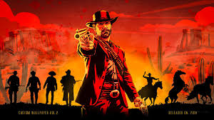

INÍCIO DA PÁGINA



IR PARA O FIM DA PÁGINA
Red Dead Redemption 2
Red Dead Redemption 2 (estilizado Red Dead Redemption II) é um jogo eletrônico de ação-aventura desenvolvido e publicado pela Rockstar Games.
É o terceiro título da série Red Dead e uma prequela de Red Dead Redemption, tendo sido lançado em outubro de 2018 para PlayStation 4 e Xbox One e em novembro de 2019 para Microsoft Windows e Google Stadia.
A história se passa em 1899 em uma representação ficcional do oeste, meio-oeste e sul dos Estados Unidos e acompanha o fora da lei Arthur Morgan, que precisa lidar com o declínio do Velho Oeste e sobreviver à perseguição de forças governamentais, gangues rivais e outros adversários.
LISTAS
Top 6 Melhores Personagens (de acordo com o todo o universo):
- Arthur Morgan
- Charles Smith
- John Marston
- Sadie Adler
- Águia Voando
- Chuva Caindo
Melhores Missões (de acordo com toda a galáxia):
- Feudos de Sangue, Antigos e Modernos
- Um Passeio Curto em uma Cidade Bonita
- Bancar, a Velha Arte Americana
- Sangue, Morte e Redenção
- A Fina Arte da Conversa
- Veneno Americano
LINKS
Tudo sobre o Jogo
Site Oficial da Rockstar Games
Site Para Compra com Preço acessível para Consoles (confiável)
Site Oficial da KaBuM!
Mais Informações
Reviws Profissionais Sobre o Jogo
Curiosidades
Curiosidades Sobre o Jogo
VOLTAR PARA O INÍCIO DA PÁGINA